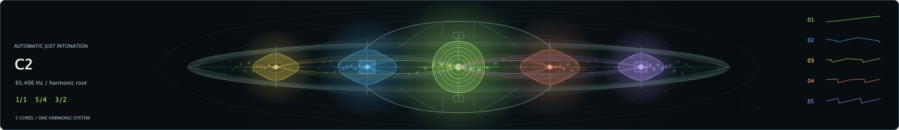
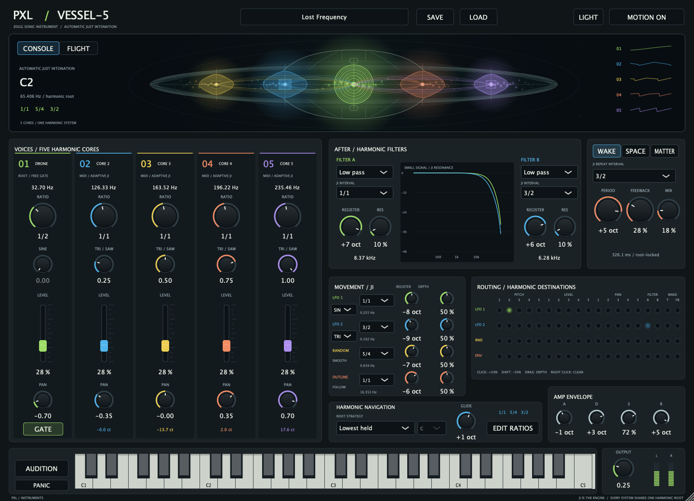
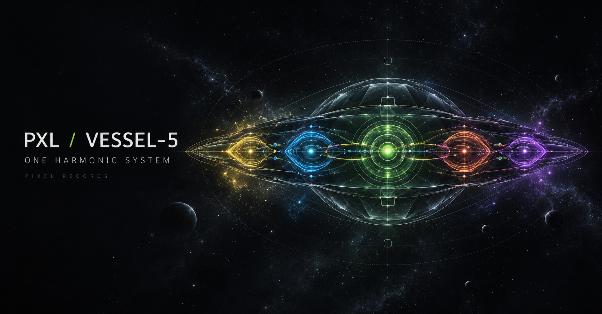

Five harmonic cores
A free-gated sine drone at the centre, with four MIDI voices around it. Shape, level, pan and ratio give each its own place.
ZOGG SONIC INSTRUMENT / 01 — 05
A living instrument built around automatic just intonation. Play a note, find a relationship, and let the whole vessel move with it.

Vessel–5 listens to the notes you hold and builds their relationships from simple ratios. As the root changes, the voices find their way to a new harmonic centre.
That same frame reaches beyond pitch: filter frequencies, movement and effect times follow the root too.
Inside the harmonic system
One harmonic reference shapes the musical systems around it. The ratios are yours to explore and edit.
A free-gated sine drone at the centre, with four MIDI voices around it. Shape, level, pan and ratio give each its own place.
Two LFOs, smooth random and an envelope follower travel through a four-by-nineteen modulation matrix.
Explore a root-related delay, resonant reverb, harmonic drive and extra partials. The recursive cloud builds a dense spectrum from rational branches.
The same chord and root change, through four different settings. Made with the Vessel–5 Audio Unit.
C MAJOR → F ROOT
5 SECONDS EACH
Dry voices and a change of root.
Ratio-derived delay and feedback.
Resonant, root-related reverb.
Recursive cloud, drive and partials.
The examples were rendered with version 0.2.2; the downloadable build adds ratio-control snapping and the updated living vessel display.

Bring the harmonic system into your studio. Includes the Audio Unit instrument and standalone app.
Download for macOSUnzip the download. Copy PXL Vessel-5.component to ~/Library/Audio/Plug-Ins/Components. Open the standalone wherever you keep your apps, or rescan Audio Units in your DAW.
Early release: host compatibility and musical results depend on your setup. No VST3 is included.